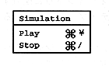

Play
The Simulation menu is used to check the created scenario. Selecting “Play” will play the saved scenario on the screen window. To check the set action, use the Macintosh keyboard and mouse instead of the Saturn PAD. The relationship is as follows.
Saturn PAD | Macintosh keyboard, mouse |
A button | a or A key, mouse click |
B button | b or B key |
C button | c or C key |
START button | s or S key |
Up button | Cursor key ↑ |
Down button | Cursor key ↓ |
Right button | Cursor key → |
Left button | Cursor key ← |
Stop
Select “Stop” if you want to end the scenario being played.